| |
Primer viaje a Brasil
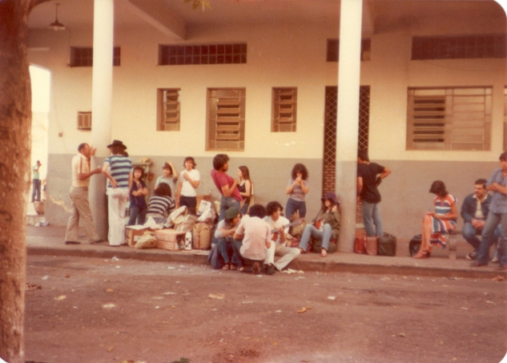 En
enero del ’80 partió un autobús de la casona de Av. Córdoba con unos 30
titeanos (liderados por Chiari y Gali) rumbo a San Pablo para reencontrarse con su maestro Juan Uviedo, que
estaba trabajando y viviendo en el Teatro Procopio Ferreira de esa ciudad.
Imagen de la izquierda: paso por la aduana de Uruguayana.
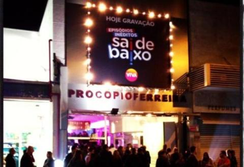
|
Los días en el Procopio - "El juicio"
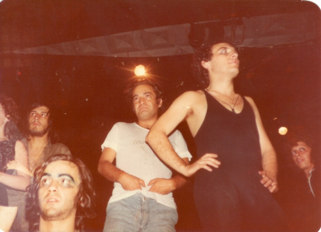
Juan y algunos
titeanos ensayando en el Procopio (Chiari, Pablo Niemtzoff, Norberto López).
|
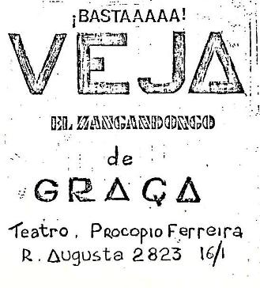
Volante fotocopiado promocionando teatro gratis en el Procopio. |
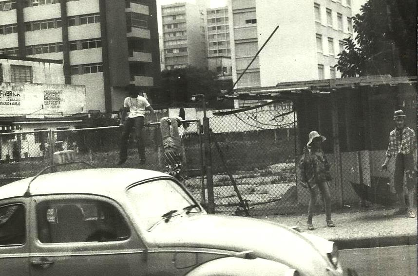
Cthulhu y otros titeanos en una esquina de San Pablo promocionando
teatro gratis en el Procopio.
|
| El reencuentro de Juan con varios de sus ex dirigidos fue muy emotivo. Otros
habían escuchado mucho de él, pero era su primer contacto personal. Los
titeanos se instalaron en el teatro y durmieron sobre el escenario. Al día
siguiente se organizó una muestra para la noche. Se hizo un volante invitando a
ver teatro "de graça" (gratis) y se fotocopió. Se organizaron
pequeños grupos que salieron desde el mediodía a recorrer la ciudad realizando
escenas en las esquinas, y al juntarse gente se les entregaba el volante
apoyando la invitación con unas palabras en un horrible portuñol. A la noche
empezó a entrar gente al teatro, que tenía sus puertas abiertas. Cuando ya
eran 20 ó 30 personas se empezaron a hacer bloques bajo la dirección de Chiari
mientras algunos titeanos golpeaban tumbadoras. Siguió entrando un poco más de
gente y los bloques se hacían por todo el teatro. Desde unos meses antes el Grupo
de Ricardo venía investigando la obra de Ionesco "El asesino sin
gajes", y los bloques empezaron a tener ese contenido. En un momento
alguien gritó que había que atrapar al asesino y todos, incluyendo el
público, comenzaron una búsqueda frenética pasando por arriba de las butacas,
por el escenario, por bambalinas, por los camarines, por el hall hasta la calle.
Todos corrían y buscaban, nadie sabía a quién. Hasta que alguien afirmó
haber atrapado al culpable. Era un muchacho alto y flaco, del público, quien
tomó su rol rápidamente. Se lo llevó en andas y en procesión hasta el
escenario, donde se dio comienzo a un improvisado juicio, en el que varias
personas del público adoptaron distintos roles: juez, fiscal, defensor,
familiares del acusado, testigos. Todos actuaron con total desenvolvimiento
desarrollando su papel. Se discutió, se interpeló, se acusó, se lloró, se
justificó, se mintió. |
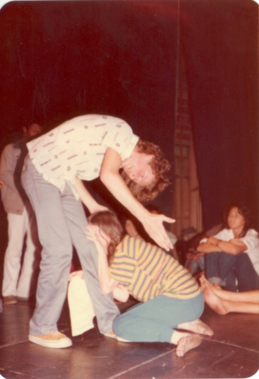
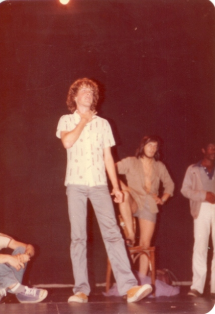 El "asesino" durante el juicio.
|
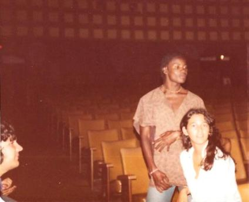
Después de largos minutos los titeanos se fueron
juntando en el fondo de la sala y se sentaron en la última fila. El
"público" no se había dado cuenta, seguía actuando. Y cuando el
juicio estaba llegando a su fin, los titeanos se levantaron y aplaudieron a
rabiar, gritando bravos. La gente, sorprendida, comenzó a saludar agradecida.
Luego todos se mezclaron en el medio de la sala, entre las butacas, y la gente
no paraba de preguntar sobre las propuestas teatrales del TiT. Pero los días en
el Procopio serían pocos. El dueño expulsó a los titeanos y con ellos,
lamentablemente, a Juan, que perdió su trabajo. Pero él estaba contento, y
juntos buscaron otro refugio. |
|
Los días en el Instituto Politécnico - Praça da Sé
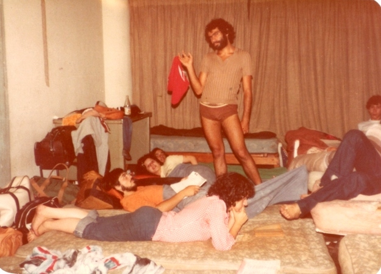 Como era verano y no había clases, muchos cuartos de estudiantes quedaron
vacíos en el Instituto Politécnico, donde se alojó el TiT. No era gratis,
pero sí muy barato, y se disfrutó mucho dormir unos días sobre colchones. Se
hicieron reuniones generales donde se discutieron objetivos y propuestas
(artísticas y organizativas). Un día Juan propuso un juego: se crearon varios
grupos y a cada uno se le dio una primera pista para encontrar un lugar en la
ciudad donde encontrar la segunda. Además de pistas, se daban consignas
teatrales que
había que cumplir. El objetivo: ganaba el grupo que llegara primero a Juan,
quien esperaría en un determinado lugar. Era como una "Búsqueda del
tesoro teatral". El juego empezó y los grupos se desperdigaron por la
ciudad. Luego de varias estaciones los grupos fueron confluyendo en Praça da
Sé (una estación común a todos los grupos), una enorme plaza céntrica de San Pablo por donde pasan centenares de
miles de personas por día. Un grupo de titeanos empezó a realizar movimientos
plásticos y otros grupos se unieron, invitando a la gente a unirse también. Varios transeúntes
aceptaron la idea y empezaron a moverse, y usaron ese espacio para empezar a expresar su odio al gobierno militar
brasilero. En un momento algunos titeanos empezaron a juntar al resto para salir
de la plaza. Caminando y hablando bajito, todos se fueron enterando del motivo:
policías de civil reconocieron el acento argentino y encañonaron disimuladamente a un par de actores,
exigiendo
que se fueran del lugar de inmediato o serían detenidos y deportados.
|
|
Los días en la USP
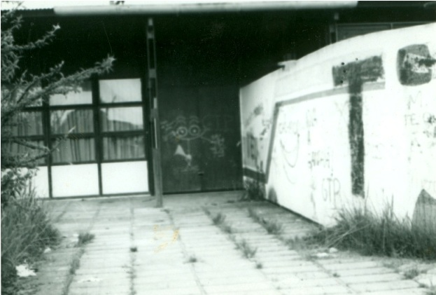
Tampoco fueron muchos los días en el Politécnico, porque se consiguió
alojamiento gratuito en la ciudad universitaria de la USP (Universidad de San
Pablo, también sin clases en ese período). Era un gran edificio vacío, como
un hangar. Hubo que dormir sobre grandes cortinas que cubrían los ventanales
(foto de la izquierda: edificio de la USP donde se alojó el TiT; pueden verse
los grandes cortinados sobre los que durmieron los titeanos).
En ese lugar el TiT recibió la visita de grupos teatrales paulistas, por
ejemplo Treta no teatro, que dio una "función especial" al TiT,
y VSP (Viajou sem passaporte), grupo con el que los titeanos sintieron
mucha afinidad artística e ideológica. Tal es así que TiT y VSP organizaron
juntos un hecho teatral en la ciudad universitaria llamado "Guerra na
universidade" donde participaron muchos estudiantes divididos en bandos
para "pelear" batallas de diferentes épocas. |
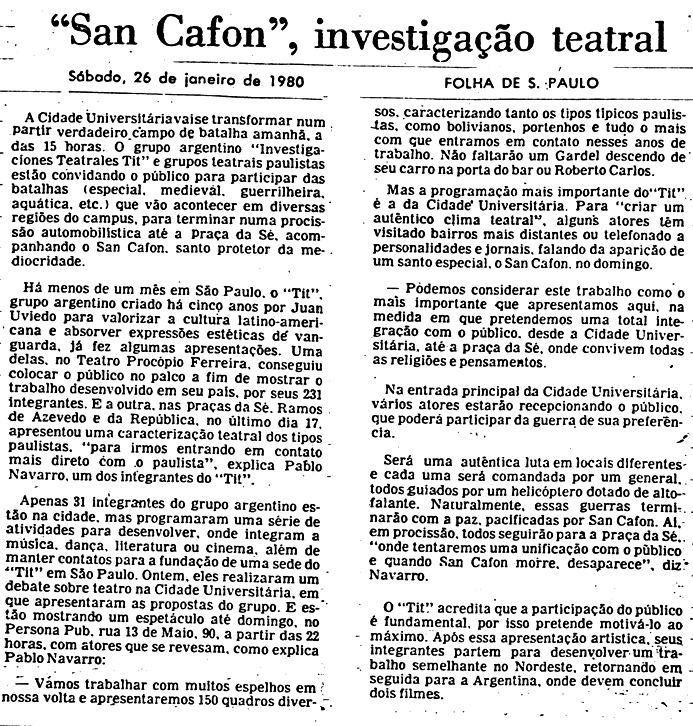
Artículo
publicado por Folha de Sao Paulo el 26 de enero. "San Cafón"
fue otra forma de llamar al hecho teatral en la ciudad universitaria. Chacho
(Pablo Navarro Espejo) estudiaba periodismo en Buenos Aires, y oficiaba de vocero de
prensa del taller. Era ortodoxo en relación al axioma de Juan: "La
mentira es la estrategia de la verdad", y se la rebuscaba para que las
agencias de noticias de los grandes diarios le creyeran (e incluso publicaran)
casi cualquier cosa, como muchas de las escritas en este artículo, por ejemplo
que se usaría un helicóptero con altoparlantes para dirigir las operaciones
desde el aire. Pero también siempre estuvo la verdad, como la frase: "El
TiT cree que la participación del público es fundamental, por eso pretende
motivarlo al máximo". Además de promocionar el hecho en la USP, el artículo nombra lo hecho
en el Procopio ("conseguiu colocar o público no palco"= "logró
poner al público en el escenario") y en Persona Pub (un pub en
cuyo zótano había espejos que a la vez permitían ver lo que había del
otro lado; posicionando velas de manera especial, en el vidrio se
conseguía una imagen que mezclaba las imágenes de quienes se posaban de
uno y del otro lado del espejo,
produciendo diferentes tipos de seres fantásticos y andróginos; mientras algunos titeanos
hacían esto con el público, otros se movían y representaban alrededor).
|
|
El acuerdo con VSP
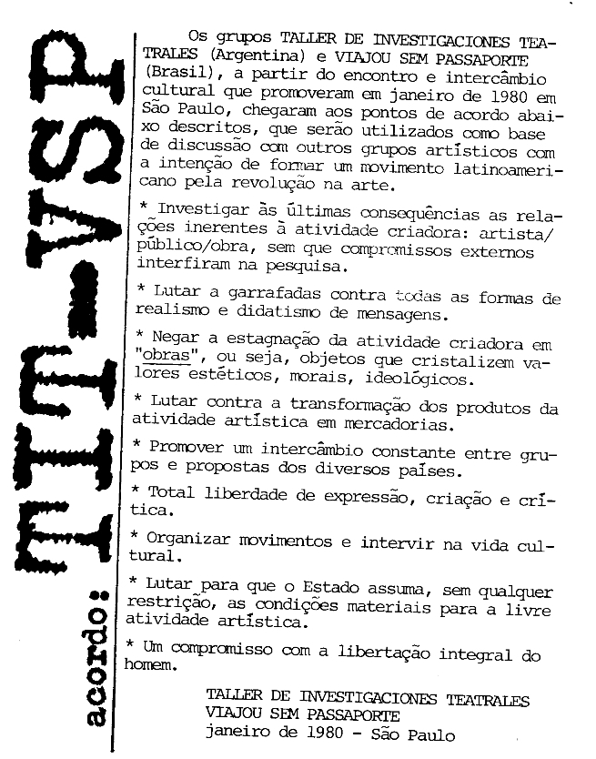
Luego del
trabajo conjunto TiT y VSP redactaron y firmaron el siguiente acuerdo:
"Los grupos Taller de Investigaciones Teatrales de Argentina y Viajou
Sem Passaporte de Brasil, a partir del encuentro de intercambio cultural que
promovieron en San Pablo en enero de 1980, llegaron a los puntos de acuerdo
abajo descriptos que serán utilizados como base de discusión con otros grupos
latinoamericanos con la intención de formar un movimiento artístico
latinoamericano por la revolución en el arte.
* Investigar hasta las últimas consecuencias las relaciones inherentes a la
actividad creadora: artista/público/obra, sin que compromisos externos
interfieran en dicha investigación.
* Luchar a botellazos contra las formas de realismo y didactismo de mensajes.
* Negar la estagnación de la actividad creadora en "obras", o sea,
objetos que cristalicen valores estéticos, morales o ideológicos.
* Luchar contra la transformación de los productos de la actividad
artística en mercaderías.
* Promover un intercambio constante entre grupos y propuestas de diferentes
países.
* Total libertad de expresión, creación y crítica.
* Organizar movimientos para intervenir en la vida cultural.
* Luchar para que el Estado asuma, sin ninguna restricción, las condiciones
materiales para la libre actividad artística.
* Un compromiso con la liberación total del hombre.
Taller de Investigaciones Teatrales - Viajou Sem Passaporte
San Pablo, enero de 1980
|
|
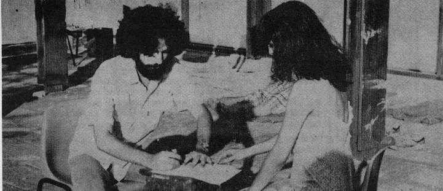
Gali
(Marta Cocco) firma el acuerdo en nombre del TiT.
|
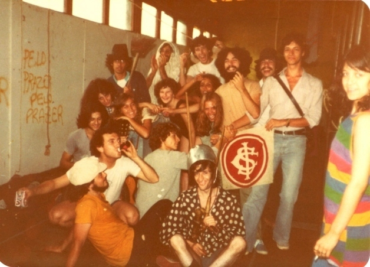
Integrantes del TiT
y de VSP, en la USP. |
|
Abajo: artículos del 24 y del 25 de enero, ambos del diario "O Estado de Sao Paulo".
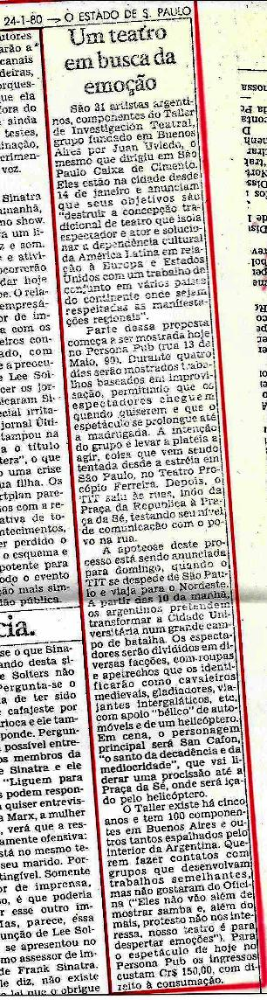 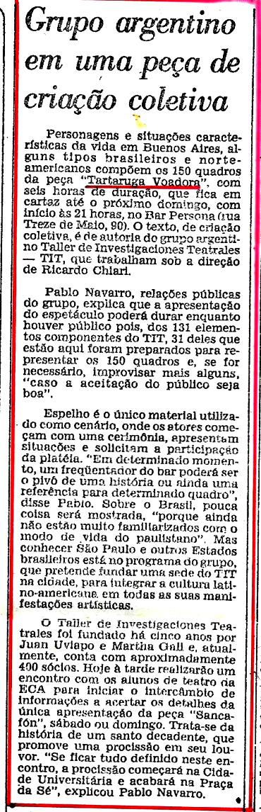 |
|
Más fotos
Ensayos en el Procopio y en la USP
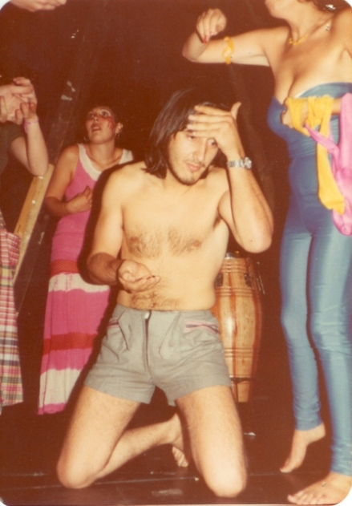 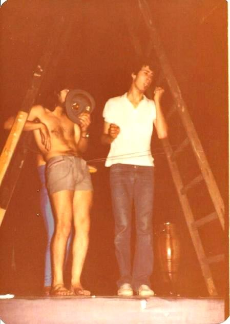
|
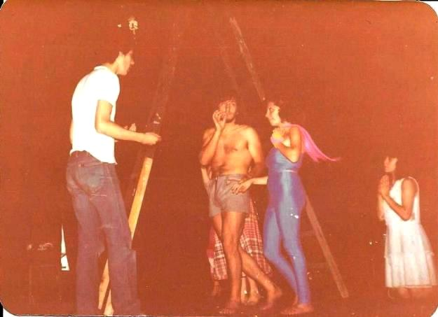 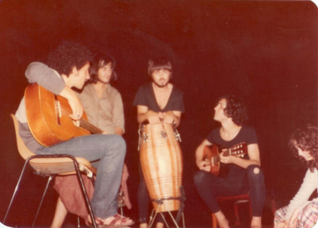 |
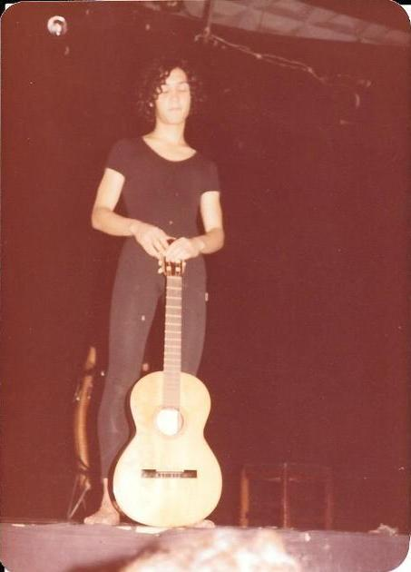
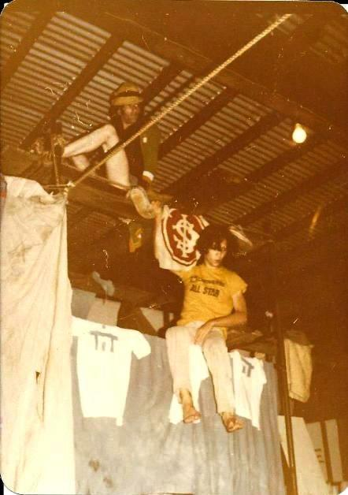 |
|
Al
promediar la estadía el taller adquirió dos vehículos viejos para
movilizarse: un Ford Galaxy y una combi VW.
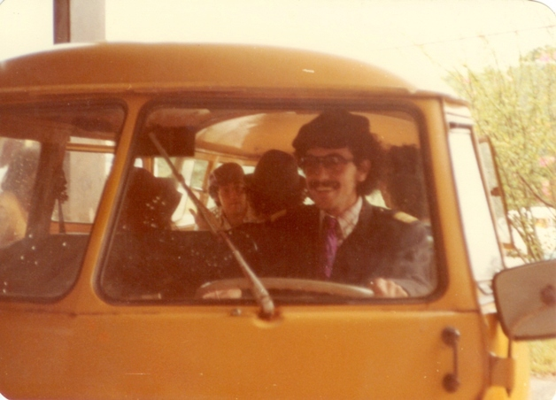
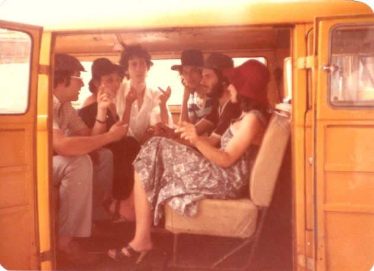 |
|
Ocio
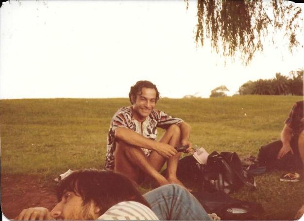
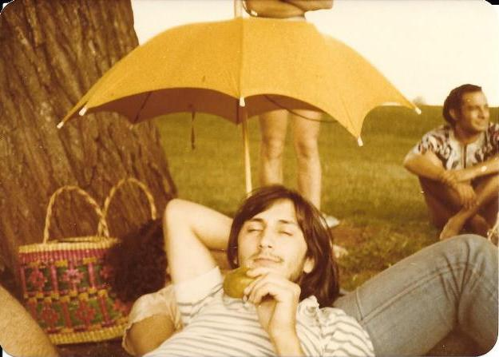 |
|
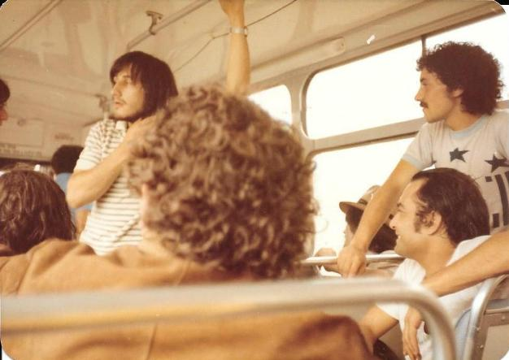
Juan, Chiari y otros titeanos paseando por San Pablo. |
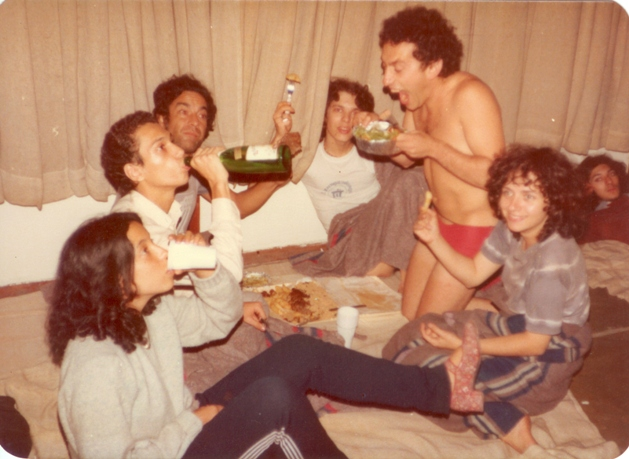
En la USP, Juan y otros cenando
sobre las cortinas. |
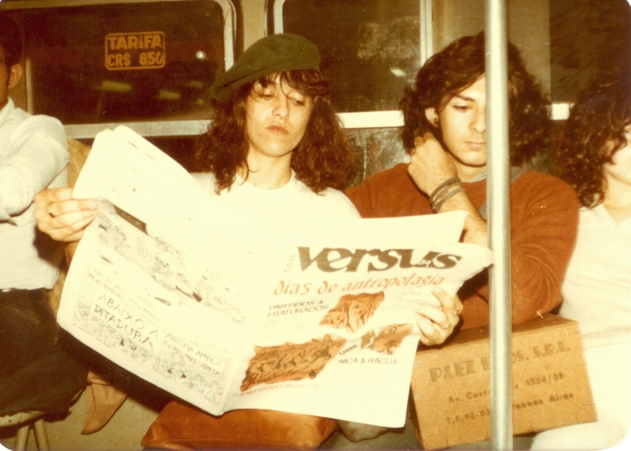
Marta Gali
posa leyendo "Versus" (periódico trotskysta brasilero) en el metro paulista. Si bien en Brasil
había una dictadura, ya desde hacía tiempo el gobierno militar venía
realizando una apertura política y de ciertas libertades como transición a una
salida "democrática".
La foto tiene su motivo: para los titeanos militantes era muy extraño
poder leer abiertamente prensa de izquierda, acostumbrados en Buenos Aires a
tener que camuflar el periódico que debían repartir entre sus contactos de
cualquier forma posible: en una tapa de un LP, en una caja de bombones, etc.
|
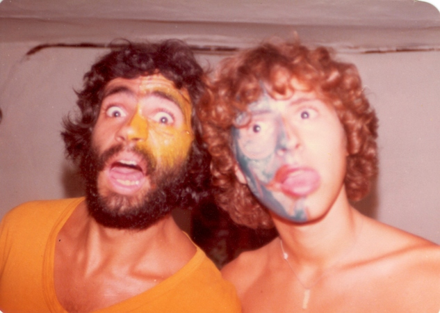
En Persona Pub
antes de una función. |
La historia del salamín
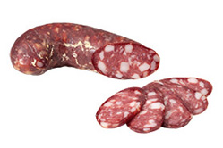
"Una
mañana en la USP. Éramos muchos y había hambre. Fuimos varios titeanos al
supermercado con los dos vehículos. Se cargaron mucho varios changuitos que
pasaron rápido por las cajas sin pagar. Pero no hubo buena sincronización. Yo
todavía estaba comprando con la Negra María. Ella se había llenado la ropa de
productos, pero alguien de vigilancia la había visto; nos interceptaron y nos
llevaron a la oficina de seguridad. No sé cómo hizo, pero en el trayecto la
Negra se deshizo de casi todo sin que nadie se diera cuenta, ni siquiera yo. En
la oficina, personal femenino la revisó y le encontró lo único de lo que no
pudo deshacerse: un salamín. Sorprendidos pero muy ofuscados (por no
encontrarle más cosas y porque nos relacionaron con quienes habían partido con
varios changuitos gratis), los encargados del super llamaron a la policía. En
un momento entra a la oficina nuestro compañero Daniel Napo, mal vestido como
siempre, con zapatillas y el resto casi harapos, pero con sombrerito y un
maletín, presentándose como nuestro abogado. Nosotros estábamos acostumbrados
a teatralizar casi las 24 horas del día, pero esa situación era patética. Me
imaginé qué podría tener adentro el maletín, de dónde lo habían sacado, y no sabía si reír o llorar.
Después de balbucear algunas palabras en portuñol inentendible lo echaron de
la oficina. Nos llevaron a la comisaría. El comisario nos trató mal, amenazó
con deportarnos. Nos preguntó qué hacíamos en Brasil y dónde nos hospedábamos. Le
dije que éramos un grupo de teatro y parábamos en el Politécnico (no quise
decir el lugar donde realmente estaba el grupo). Delante nuestro llamó por teléfono al
Politécnico y su semblante cambió. Del otro lado alguien habló bien de
nosotros (quizás no estaba enterado de que ya nos habíamos ido de allí y con
algunas deudas). El comisario fue a hablar con los responsables del super que
estaban en una sala contigua y
volvió con una propuesta: si pagábamos el salamín, no levantarían cargos.
Con la Negra rescatamos las pocas monedas que teníamos encima y logramos
pagarlo. A todo esto, el salamín siempre estuvo a la vista, encima del
escritorio del comisario. Mientras esperábamos la finalización de unos papeleos, le preguntamos
al comisario si podíamos comer el salamín, ya que teníamos hambre. Su
respuesta fue amable y simple: el salamín ya era nuestro. Hizo que un agente
nos trajera un cuchillo y algo de pan. Cuando ya habíamos comido la mitad, nos
despidió e hizo que un patrullero nos llevara adonde quisiéramos. Ya arriba
del vehículo, pedimos ir a la USP. Al llegar, los titeanos que estaban en la
puerta de nuestro refugio saltaron de algarabía. Siguiendo con nuestra
costumbre de teatralidad, la Negra y yo bajamos del patrullero y caminamos
solemnemente levantando juntos la mitad del salamín que había
sobrevivido". [Relatada por Batata].
La vuelta
Algunos pocos volvieron en ómnibus normales. El resto viajó amuchonado en
el Galaxy y la combi. La vuelta para ellos fue un poco larga y accidentada. Iban
parando en los pueblos, pidiendo dinero para comida y combustible. El Galaxy
pinchó goma varias veces por el sobrepeso. En la frontera debieron esperar dos
días por problemas con los papeles de los vehículos. Chacho, María y Silvina
cruzaron a pie e hicieron dedo. En Paraná fueron revisados por la policía y
como llevaban "cosas raras" (libros ideológicos, volantes de la Guerra
na universidade, y otras yerbas), fueron detenidos. Estuvieron 7 días
presos en Inteligencia de Paraná. Fueron maltratados pero finalmente liberados.
Llegando a Zárate la combi chocó a un caballo que cruzó la ruta. Pero a pesar
de los obstáculos, todos llegaron enteros a Buenos Aires.

|